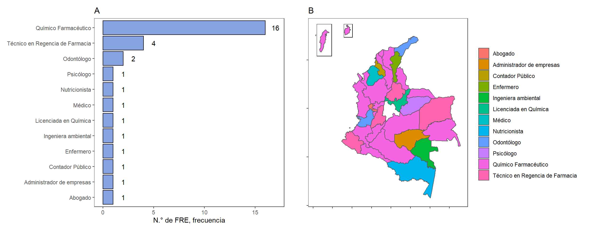

4.2 Estructura organizacional
En el panel izquierdo de la 4.2 se observa la distribución de los perfiles profesionales de los encargados de cada FRE. Se puede evidenciar una mayoría de profesionales Químicos Farmacéuticos como responsables encargados de los entes territoriales a nivel nacional.De manera similar, se observan Técnicos en Regencia en Farmacia ocupando este cargo a nivel territorial, permaneciendo en la misma línea profesional de trabajo, referente al conocimiento y habilidades en la gestión de los medicamentos. Lo anterior, es beneficioso para los procesos internos del FRE, ya que permite un adecuado desarrollo de las funciones principales del ente territorial.
Figura 4.2: Perfil de profesional de encargados de los FRE
Por otro lado, se mantiene un grupo de profesionales diferentes a los anteriores, pero denominados como profesionales de la salud, cuyas competencias pueden relacionarse de alguna manera con la adecuada administración y gestión de los medicamentos. Por el contrario, se deben resaltar algunos profesionales (4), encargados de algunos FRE, que no poseen este tipo de habilidades idóneas y apropiadas, desde su formación profesional, resultando algunos casos en dificultades técnicas para el desarrollo interno de las entidades territoriales.
Figura 4.3: Perfil de profesional de personal de apoyo a los FRE

Cómo se puede ver en el panel izquierdo de la Figura 4.4, una 10 de los 31 FRE, trabajan con un equipo de 2 personas, que corresponderían al encargado del FRE y algún contratista que sirve de apoyo en las labores relacionadas con el funcionamiento del FRE. Dependiendo de la cantidad de instituciones inscritas, si bien no existe ninguna gráfica o pregunta en la encuesta que induzca a pensar que los tipos de contratación afectan o no directamente a los FRE.
Figura 4.4: N.° de personas que trabajan en el FRE

A partir de la Figura 4.5 se puede notar una gran tendencia que tienen los FRE a nivel nacional, referente al tipo de vinculación por medio de contrato por prestación de servicios. La gran mayoría, precisamente, el 98%, del personal de apoyo de los FRE está relacionada con este tipo de contrato mencionado. Estas personas son vinculadas al ente territorial para cumplir algunas actividades internas del FRE, pero también tienen otras actividades laborales, fuera del FRE, según sus obligaciones contractuales. Por el contrario, el personal directo al funcionamiento del FRE, cuya atención es completa en las labores internas del FRE, está relacionado por nombramiento, como servidor público. En muchos territorios nombran como servidor público a la persona encargada del FRE, mientras que los demás guardan una predisposición para ser relacionados como contratistas.
Figura 4.5: Tipo de vinculación al FRE
Lo anterior puede generar inconvenientes en la continuidad del correcto desarrollo del FRE, afectando la funcionalidad y abandonando algunas actividades críticas para cumplir sus objetivos de creación. Particularmente, los primeros meses del año, este tipo de personas vinculadas por contrato de prestación de servicios, dejan de laborar porque finalizó su contrato el año pasado, y por barreras administrativas no son contratadas hasta el segundo bimestre. El personal nombrado en muchos casos es la persona encargada del FRE, cuyos temas operativos no son fáciles y por tal motivo se dejan de hacer en el territorio, como es el caso de la consolidación de los informes que deben ser enviados mensualmente al FNE, según la normativa vigente.
En la Tabla 4.1 se observa la proporción del personal del FRE contratado de acuerdo a la región del país.
| Región | Nombramiento | Contratación |
|---|---|---|
| Amazonía | 21.43% | 78.57% |
| Caribe | 42.86% | 57.14% |
| Central | 41.38% | 58.62% |
| Eje Cafetero | 58.33% | 41.67% |
| Orinoquía | 45.45% | 54.55% |
| Pacífico | 19.23% | 80.77% |